私有云：(5)OpenStack服务运维案例
案例描述
本案例共讲述了多个OpenStack服务的运维案例，具体包括如下：
1.更改Glance镜像服务的后端存储；
2.OpenStack平台中RabbitMQ消息队列服务的优化；
3.OpenStack平台中开放镜像给租户使用；
4.使用Jumpserver跳板机对接OpenStack平台进行管理。
案例一：使用NFS作为Glance存储后端
规划节点
节点规划见表1。
表1 节点规划
| IP | 主机名 | 节点 |
|---|---|---|
| 192.168.200.31 | nfs-server | nfs节点 |
| 192.168.200.11 | controller | OpenStack Controller节点 |
基础准备
登录物理OpenStack平台，使用CentOS7.9镜像创建云主机，主机名命名为nfs-server。192.168.200.11是OpenStack平台的controller节点。计划在nfs-server节点安装nfs服务，并将某个目录作为共享目录，然后controller节点作为nfs的client节点，将Glance后端存储的目录，挂载到nfs共享存储上。
案例实施
NFS服务介绍
（1）NFS简介
NFS网络文件系统提供了一种在类UNIX系统上共享文件的方法。目前NFS有3个版本：NFSv2、NFSv3、NFSv4。CentOS7默认使用NFSv4提供服务，优点是提供了有状态的连接，更容易追踪连接状态，增强安全性。NFS监听在TCP 2049端口上。客户端通过挂载的方式将NFS服务器端共享的数据目录挂载到本地目录下。在客户端看来，使用NFS的远端文件就像是在使用本地文件一样，只要具有相应的权限就可以使用各种文件操作命令（如cp、cd、mv和rm等），对共享的文件进行相应的操作。Linux操作系统既可以作为NFS服务器也可以作为NFS客户，这就意味着它可以把文件系统共享给其他系统，也可以挂载从其他系统上共享的文件系统。
为什么需要安装NFS服务？当服务器访问流量过大时，需要多台服务器进行分流，而这多台服务器可以使用NFS服务进行共享。NFS除了可以实现基本的文件系统共享之外，还可以结合远程网络启动，实现无盘工作站（PXE启动系统，所有数据均在服务器的磁盘阵列上）或瘦客户工作站（本地自动系统）。NFS应用场景多为高可用文件共享，多台服务器共享同样的数据，但是它的可扩展性比较差，本身高可用方案不完善。取而代之，数据量比较大的可以采用MFS、TFS、HDFS等分布式文件系统。
（2）NFS组成
两台计算机需要通过网络建立连接时，双方主机就一定需要提供一些基本信息，如IP地址、服务端口号等。当有100台客户端需要访问某台服务器时，服务器就需要记住这些客户端的IP地址以及相应的端口号等信息，而这些信息是需要程序来管理的。在Linux中，这样的信息可以由某个特定服务自己来管理，也可以委托给RPC来帮助自己管理。RPC是远程过程调用协议，RPC协议为远程通信程序管理通信双方所需的基本信息，这祥，NFS服务就可以专注于如何共享数据。至于通信的连接以及连接的基本信息，则全权委托给RPC管理。因此，NFS组件由与NFS相关的内核模块、NFS用户空间工具和RPC相关服务组成。主要由如下2个RPM包提供。
① nfs-utils：包含NFS服务器端守护进程和NFS客户端相关工具。
② rpcbind：提供RPC的端口映射的守护进程及其相关文档、执行文件等。
若系统上还没有安装NFS的相关组件，可以使用如下命令安装。
1 | yum install nfs-utils rpcbind |
使用如下命令启动NFS的相关服务，并配置开机启动。
1 | systemctl start rpcbind |
与NFS服务相关的文件有：守护进程、systemd的服务配置单元、服务器端配置文件、客户端配置文件、服务器端工具、客户端工具、NFS信息文件等。
NFS服务安装与配置
（1）修改主机名
修改主机名，修改主机名后，使用CRT软件断开重新连接节点，以生效新主机名。
1 | [root@localhost ~]# hostnamectl set-hostname nfs-server |
（2）NFS服务安装
此处nfs-server节点使用的基础镜像为CentOS7.9，该基础镜像中已经安装了NFS服务，查看当前安装的NFS服务，命令如下：
1 | [root@nfs-server ~]# rpm -qa |grep nfs-utils |
可以看到nfs-utils和rpcbind服务已经安装完毕了。
（3）NFS服务配置
创建一个目录作为NFS的共享目录，命令如下：
1 | [root@nfs-server ~]# mkdir /mnt/test |
创建完共享目录后，编辑NFS服务的配置文件/etc/exports，在配置文件中加入一行代码，命令如下：
1 | [root@nfs-server ~]# vi /etc/exports |
生效配置，命令如下：
1 | [root@nfs-server ~]# exportfs -r |
配置文件说明：
● /mnt/test：为共享目录（若没有这个目录，请新建一个）。
● 192.168.200.0/24：可以为一个网段，一个IP，也可以是域名。域名支持通配符，例如，*.qq.com。
● rw：read-write，可读写。
● ro：read-only，只读。
● sync：文件同时写入硬盘和内存。
● async：文件暂存于内存，而不是直接写入内存。
● wdelay：延迟写操作。
● no_root_squash：NFS客户端连接服务端时，如果使用的是root，那么对服务端共享的目录来说，也拥有root权限。显然开启这项是不安全的。
● root_squash：NFS客户端连接服务端时，如果使用的是root，那么对服务端共享的目录来说，拥有匿名用户权限，通常它将使用nobody或nfsnobody身份。
● all_squash：不论NFS客户端连接服务端时使用什么用户，对服务端共享的目录来说，都拥有匿名用户权限。
● anonuid：匿名用户的UID（User Identification，用户身份证明）值，可以在此处自行设定。
● anongid：匿名用户的GID（Group Identification，共享资源系统使用者的群体身份）值。
（4）NFS服务启动
nfs-server端启动NFS服务，命令如下：
1 | [root@nfs-server ~]# systemctl start rpcbind |
nfs-server端查看可挂载目录，命令如下：
1 | [root@nfs-server ~]# showmount -e 192.168.200.31 |
至此，NFS服务的Server端配置完毕，接下来要让Controller节点作为NFS的Client端，配置Glance服务的后端存储使用NFS服务。
配置NFS作为Glance后端存储
（1）配置Controller节点作为Client端
使用远程工具连接到Controller节点，查看是否安装了NFS服务的客户端，命令如下：
1 | [root@controller ~]# rpm -qa |grep nfs-utils |
查看到Controller节点已经安装了nfs-utils工具，该节点可以作为NFS的Client端使用。
（2）挂载目录
在挂载目录之前，必须要弄清楚一件事情，就是Glance服务的后端存储在哪里，或者说，使用glance image-create命令上传的镜像会被存放到哪里。镜像会被存放到/var/lib/glance/images目录下，关于这个路径，感兴趣的读者可以自行上传镜像测试。
知道了Glance的存储路径，就可以挂载该目录到NFS服务了，命令如下：
1 | [root@controller ~]# mount -t nfs 192.168.200.31:/mnt/test /var/lib/glance/images/ |
使用df命令查看挂载情况。
1 | [root@controller ~]# df -h |
可以发现挂载成功。
（3）修改配置
在做完挂载操作后，此时Glance服务还不能正常使用，若使用glance image-create命令上传镜像的话，会报错，因为此时images目录的用户与用户组不是glance，而是root，需要把images目录的用户与用户组进行修改，命令如下：
1 | [root@controller ~]# cd /var/lib/glance/ |
这个时候，Glance服务就可以正常使用了，使用cirros镜像进行测试，将
cirros-0.3.4-x86_64-disk.img上传至Controller节点，并上传，命令如下：
1 | [root@controller ~]# source /etc/keystone/admin-openrc.sh |
可以看到上传镜像成功。查看images目录下的文件，命令如下：
1 | [root@controller ~]# ll /var/lib/glance/images/ |
然后回到nfs-server节点，查看/mnt/test下的文件，命令如下：
1 | [root@nfs-server ~]# ll /mnt/test/ |
文件的ID相同，验证NFS作为Glance镜像服务的后端存储成功。
案例二：RabbitMQ服务优化
规划节点
节点规划见表2。
表2 节点规划
| IP | 主机名 | 节点 |
|---|---|---|
| 192.168.200.11 | controller | OpenStack Controller节点 |
| 192.168.200.12 | compute | OpenStack Compute节点 |
基础准备
使用云主机搭建的OpenStack平台作为实验节点。192.168.200.11是OpenStack平台的controller节点。OpenStack各个组件内部的各个服务进程之间则是通过基于AMPQ的RPC方式进行通信，实现RPC通信需借助RabbitMQ消息队列，在大访问量的情况下，对RabbitMQ服务有一定的压力。
案例实施
RabbitMQ服务介绍
RabbitMQ是Advanced Message Queuing Protocol （AMQP，高级消息队列协议）开放标准的实现，它支持符合标准的客户端请求程序与符合标准的消息中间件代理进行通信。AMQP的模型架构如图2-1所示：
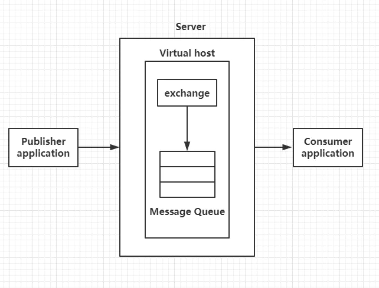
图2-1 AMQP模型
AMQP中的核心概念：
（1）Broker：消息中间件的服务节点，对于RabbitMQ来说，一个RabbitMQ Broker可以简单地看作一个RabbitMQ服务节点，或者RabbitMQ服务实例；
（2）Virtual Host：虚拟主机，表示一批交换器、消息队列和相关对象。虚拟主机是共享相同的身份认证和加密环境的独立服务器域。每个vhost本质上就是一个mini版的RabbitMQ服务器，拥有自己的队列、交换器、绑定和权限机制；
（3）Producer：生产者，消息投递方，生产者创建消息，然后发布到RabbitMQ中；
（4）Consumer：消费者，就是接收消息的一方，消费者连接到RabbitMQ服务器，并订阅到队列上；
（5）Queue：队列，RabbitMQ的内部对象，用于存储消息，RabbitMQ的生产者生产消息并最终投递到队列中，消费者可以从队列中获取消息并消费；
（6）Exchange：交换器，生产者将消息发送到Exchange，由交换器将消息路由到一个或者多个队列中；
（7）RoutingKey：路由键，生产者将消息发给交换器的时候，一般会指定一个RoutingKey，用来指定这个消息的路由规则，生产者可以在发送消息给交换器时，通过指定RoutingKey来决定消息流向哪里。
RabbitMQ在OpenStack中的运用
要了解RabbitMQ在OpenStack中的作用，首先以创建虚拟机为例分析一下消息流程，创建虚拟机的流程如图2-2所示：
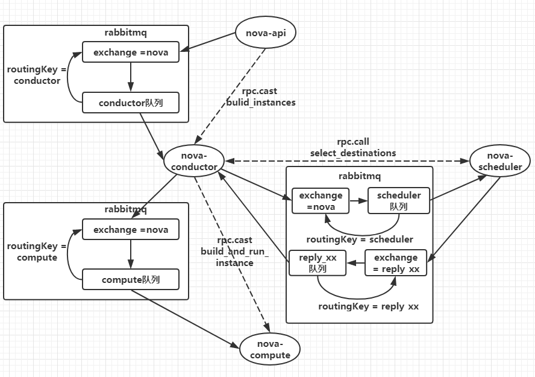
图2-2 创建虚拟机流程图
从上图能够看出，以nova-api和nova-conductor之间的通信为例，nova-conductor服务在启动时会注册一个RPC server等待处理请求，nova-api发送创建虚拟机的rpc请求时会先创建一个topic publisher用于topic发布，method为build_instance，然后publisher将消息发送给exchange，exchange再根据routingkey转发给绑定的queue中，最后由topic consumer接收并调用nova-conductor manager中的build_instance方法处理，对于nova-conductor和nova-scheduler之间的通信，多了一步把目标主机作为返回结果信息返回到reply_xx队列中，然后由nova-conductor接收以后向nova-compute发起rpc.cast的创建请求。
OpenStack各个组件内部的各个服务进程之间则是通过基于AMPQ的RPC方式进行通信，实现RPC通信需借助Rabbitmq消息队列，RPC方式又分为两种，rpc.cast和rpc.call，rpc.call为request/response方式，多用于同步场景；而使用rpc.cast方式发出请求后则无需一直等待响应，但之后需要定期查询执行结果，一般用于异步场景，OpenStack将其使用的通信方式都封装在公有库oslo_messaging中。
RabbitMQ的性能瓶颈
RabbitMQ每增加一个连接，erlang都会给这个连接分配三个erlang进程，每个进程都会分配一定大小内存空间，所以随着连接数的增长，内存和erlang进程数呈现有规律的增长，所以RabbitMQ连接数的无限增大会压垮mq服务，导致RabbitMQ服务崩溃。
客户端与RabbitMQ建立的是长连接，而不是建立短连接，因为如果频繁的建立、销毁connection，会增加额外的时间开销，当业务量比较大时，就会对系统性能产生比较大的影响。OpenStack组件与RabbitMQ的连接使用到了第三方库oslo_message中的connection pool的概念，在不超过pool size的前提上，当有并发业务的时候，如果发现pool中已有connection正被使用，那么就会在pool中继续创建新的connection，直到创建的connection数量达到pool的最大值，之后如果再有业务需要，会等待之前创建的connection被重新放入connection pool，然后等待被继续使用。这种情况下，就会出现connection一直增长的现象。
RabbitMQ的优化
在上面的文章中可以看到，RabbitMQ的连接数是压垮消息队列的一个重要的指标。所以在平时使用OpenStack平台的过程中，如果大量的用户同时创建虚拟机，会导致云平台创建报错，其实就是消息队列服务的崩溃。
在优化方面，我们首先想到，是将RabbitMQ服务默认的连接数量改大，修改方法如下：
（1）系统级别修改
使用CRT等远程工具连接到controller节点，然后修改配置文件，命令如下：
1 | [root@controller ~]# vi /etc/sysctl.conf |
修改完毕后保存退出并生效配置，命令如下：
1 | [root@controller ~]# sysctl -p |
（2）用户级别修改
用户级别修改，编辑/etc/security/limits.conf配置文件，具体命令如下：
1 | [root@controller ~]# vi /etc/security/limits.conf |
修改完之后，保存退出。
（3）修改RabbitMQ配置
修改RabbitMQ服务的service配置文件rabbitmq-server.service，具体命令如下：
1 | [root@controller ~]# vi /usr/lib/systemd/system/rabbitmq-server.service |
编辑完之后保存退出，重启RabbitMQ服务，命令如下：
1 | [root@controller ~]# systemctl daemon-reload |
重启完毕后，查看RabbitMQ的最大连接数，命令如下：
1 | [root@controller ~]# rabbitmqctl status |
可以看到当前的RabbitMQ已被修改。
案例三：OpenStack平台开放镜像权限
规划节点
节点规划见表3。
表3 节点规划
| IP | 主机名 | 节点 |
|---|---|---|
| 192.168.200.11 | controller | OpenStack Controller节点 |
| 192.168.200.12 | compute | OpenStack Compute节点 |
基础准备
使用云主机搭建的OpenStack平台作为实验节点。该案例主要是实现对不同租户开放不同镜像，便于更好的管理OpenStack云平台和租户。
案例实施
场景分析
（1）背景
某OpenStack云平台有两个租户，A租户与B租户，分别属于两个部门，该公司对镜像的管理比较严格，镜像都由管理员进行上传和权限管理。
（2）诉求
该公司有一个镜像，需要共享给A租户使用，对B租户不可见，实现这种方式最简单的方式，是由A租户中的用户自行上传镜像，这样A租户里面的用户可以看见该镜像，而B租户中的用户看不见。但是现在镜像不能由普通用户去上传，只能通过管理员进行操作。
（3）解决方案
通过管理员上传该镜像，并使用相关命令开放给A租户。
案例实操
（1）创建租户
登录OpenStack平台，创建租户depA和depB，并且在这两个租户下各创一个用户userA和userB的普通用户，创建完之后（创建过程不再赘述），使用命令查看，命令如下：
1 | [root@controller ~]# source /etc/keystone/admin-openrc.sh |
可以看见租户与用户均已存在。
（2）上传镜像
使用cirros-0.3.4-x86_64-disk.img上传至控制节点的/root目录下，并上传至云平台中，命令如下：
1 | [root@controller ~]# glance image-create --name cirros --disk-format qcow2 --container-format bare --progress < cirros-0.3.4-x86_64-disk.img |
上传镜像后，userA和userB都不能看到该镜像。接下来做相关配置，使得A租户中的用户可以看到该镜像。
（3）权限配置
首先将镜像共享给A租户，命令如下：
1 | [root@controller ~]# glance member-create 1fa9cbfe-392f-437e-ad18-f00987415b15 df58511d2c914690b48e89f1e512ae6b |
在共享之后，镜像的状态是pending状态，此时还需要激活镜像，命令如下：
1 | [root@openstack ~]# glance member-update 1fa9cbfe-392f-437e-ad18-f00987415b15 df58511d2c914690b48e89f1e512ae6b accepted |
此时镜像的状态就变为了accepted，可以在dashboard界面登录userA用户，查看是否可以看到cirros镜像（也可以登录userB用户，查看是否能看到镜像），如图3-1所示：
图3-1 镜像界面
通过这种方式，可以使用管理员设置不同租户对不同镜像的访问权限。
案例四：OpenStack平台对接堡垒机
规划节点
节点规划见表4。
表4 节点规划
| IP | 主机名 | 节点 |
|---|---|---|
| 192.168.200.11 | controller | OpenStack Controller节点 |
| 192.168.200.12 | compute | OpenStack Compute节点 |
| 192.168.200.13 | jumpserver | OpenStack 堡垒机节点 |
基础准备
使用云主机搭建的OpenStack平台作为实验节点。并申请一台云主机作为堡垒机节点，搭建堡垒机服务。该案例主要是实现堡垒机对OpenStack节点主机的跳转。
案例实施
云堡垒机简介
堡垒机，即在一个特定的网络环境下，为了保障网络和数据不受来自外部和内部用户的入侵和破坏，而运用各种技术手段监控和记录运维人员对网络内的服务器、网络设备、安全设备、数据库等设备的操作行为，以便集中报警、及时处理及审计定责。
云堡垒机（Cloud Bastion Host，CBH）是一款4A统一安全管控平台，为企业提供集中的帐号（Account）、授权（Authorization）、认证（Authentication）和审计（Audit）管理服务。
云堡垒机是一种可提供高效运维、认证管理、访问控制、安全审计和报表分析功能的云安全服务。云租户运维人员可通过云堡垒机完成资产的运维和操作审计。堡垒机通过基于协议正向代理可实现对SSH、Windows远程桌面、SFTP等常见的运维协议的数据流进行全程记录，再通过数据流重置的方式进行录像回放，达到运维审计的目的。
云堡垒机提供云计算安全管控的系统和组件，包含部门、用户、资源、策略、运维、审计等功能模块，集单点登录、统一资产管理、多终端访问协议、文件传输、会话协同等功能于一体。通过统一运维登录入口，基于协议正向代理技术和远程访问隔离技术，实现对服务器、云主机、数据库、应用系统等云上资源的集中管理和运维审计。
云堡垒机无需安装部署，可通过HTML5技术连接管理多个云服务器，企业用户只需使用主流浏览器或手机APP，即可随时随地实现高效运维。云堡垒机支持RDP/SSH/Telnet/VNC等多种协议，可访问所有Windows、Linux/Unix操作系统。企业用户可以通过云堡垒机管理多台云服务器，满足等保三级对用户身份鉴别、访问控制、安全审计等条款的要求。
其从功能上讲，它综合了核心系统运维和安全审计管控两大主干功能，从技术实现上讲，通过切断终端计算机对网络和服务器资源的直接访问，而采用协议代理的方式，接管了终端计算机对网络和服务器的访问。形象地说，终端计算机对目标的访问，均需要经过运维安全审计的翻译。打一个比方，运维安全审计扮演着看门者的工作，所有对网络设备和服务器的请求都要从这扇大门经过。因此运维安全审计能够拦截非法访问和恶意攻击，对不合法命令进行命令阻断，过滤掉所有对目标设备的非法访问行为，并对内部人员误操作和非法操作进行审计监控，以便事后责任追踪。
传统堡垒机多以硬件形式进行售卖，硬件一体机本质上就是将软件部署在独立的硬件设备之上。尽管硬件一体机在部署上线和独立运维上有其优势，但在面临新一代堡垒机需要解决的各种需求时越来越成为一种限制。同时，硬件一体机带来的额外硬件维护管理工作也成为运维人员的一种负担。随着硬件虚拟化技术及云平台的普及，软件部署方式越来越成为堡垒机的首选部署方式。因此，相较于硬件而言，软件模式不仅更易于部署和维护，还在扩缩容、高可用方案上更具灵活的优势。如图4-1所示：
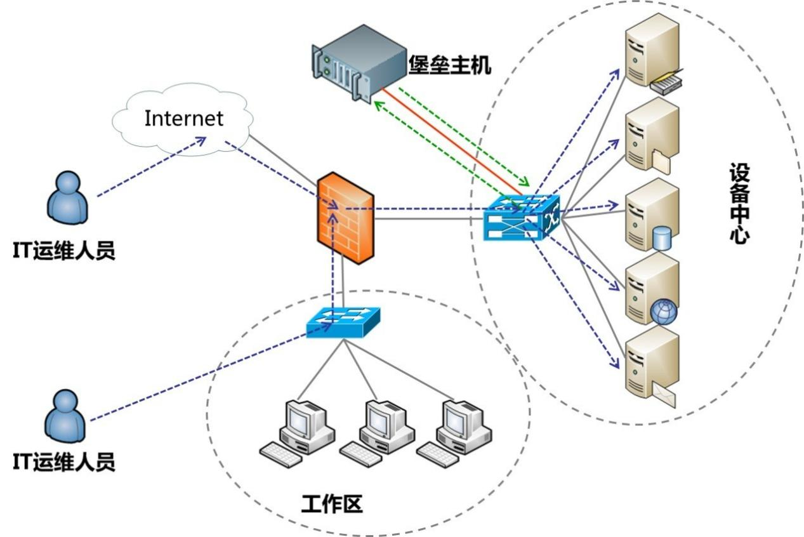
图4-1 堡垒机
云堡垒机优势
（1）HTML5一站式管理
无需安装特定客户端，无需安装任何插件，任意终端的主流浏览器，包括移动端APP浏览器登录，用户随时随地打开即可进行运维。
系统HTML5管理界面简洁易用，集中管理用户、资源和权限，支持批量创建用户、批量导入资源、批量授权运维、批量登录资源等高效运维管理方式。
（2）操作指令精准拦截
针对资源敏感操作进行二次复核，系统预置标准Linux字符命令库或自定义命令，对运维操作指令和脚本的精准拦截，并可通过异步“动态授权”，实现对敏感操作的动态管控，防止误操作或恶意操作的发生。
（3）核心资源二次授权
借鉴银行金库授权机制，针对重要资源的运维权限设置多人授权，若需登录此类资源，需多位授权候选人进行“二次授权”，加强对核心资源数据的保护，提升数据安全防护能力和管理能力，保障核心资产数据的绝对安全。
（4）应用发布扩展
针对数据库类、Web应用类、客户端程序类等不同应用资源，提供统一访问入口，并可提高对应用操作的图形化审计。
（5）数据库运维审计
针对DB2、MySQL、SQL Server和Oracle等云数据库，支持统一资源运维管理，以及SSO单点登录工具一键登录数据库，提供对数据库操作的全程记录，实现对云数据库的操作指令进行解析，100%还原操作指令。
（6）自动化运维
自动化运维是将系统运维管理中复杂的、重复的、数量基数大的操作，通过统一的策略、任务将复杂运维精准化和效率化，帮助运维人员从重复的体力劳动中解放出来，提高运维效率。
部署堡垒机
（1）修改主机名
远程连接堡垒机节点，修改节点的主机名为jumpserver。如下所示：
1 | [root@jumpserver ~]# hostnamectl set-hostname jumpserver |
（2）关闭防火墙与SELinux
将节点的防火墙与SELinux关闭，并设置永久关闭SELinux，命令如下：
1 | [root@jumpserver ~]# setenforce 0 |
（3）配置本地Yum源
使用提供的软件包配置Yum源，使用远程连接工具自带的传输工具，将jumpserver.tar.gz软件包上传至jumpserver节点的/root目录下。
解压软件包jumpserver.tar.gz至/root目录下，命令如下：
1 | [root@jumpserver ~]# tar -zxvf jumpserver.tar.gz -C /opt/ |
将默认Yum源移至其他目录，创建本地Yum源文件，命令及文件内容如下：
1 | [root@jumpserver ~]# mv /etc/yum.repos.d/* /media/ |
（4）安装依赖环境
安装python数据库，命令如下：
1 | [root@jumpserver ~]# yum install python2 -y |
安装配置docker环境，命令如下：
1 | [root@jumpserver ~]# cp -rf /opt/docker/* /usr/bin/ |
验证服务状态，命令如下：
1 | [root@jumpserver ~]# docker --version |
（5）安装jumpserver服务
加载jumpserver服务组件镜像，命令如下：
1 | [root@jumpserver ~]# cd /opt/images/ |
创建jumpser服务组件目录，命令如下：
1 | [root@jumpserver images]# mkdir -p /opt/jumpserver/{core,koko,lion,mysql,nginx,redis} |
生效环境变量static.env，使用所提供的脚本up.sh启动jumpserver服务，命令如下：
1 | [root@jumpserver images]# cd /opt/compose/ |
浏览器访问http://192.168.100.102，jumpserver web登录（admin/admin），如图4-2所示：
图4-2 web登录
设置新密码，如图4-3、图4-4所示：
图4-3 修改密码
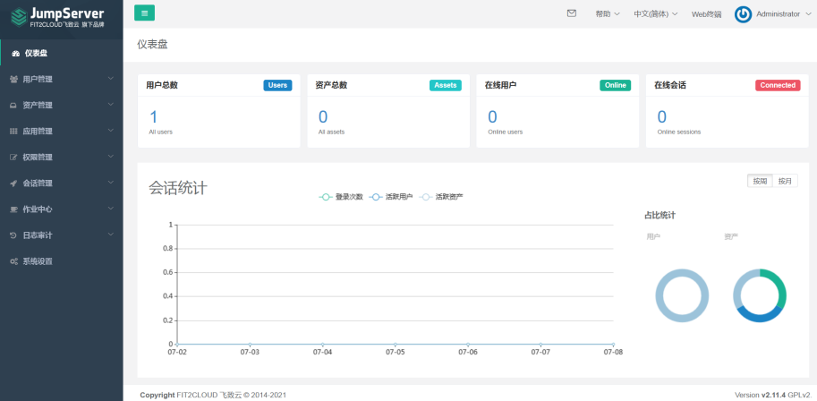
图4-4 登录成功
至此jumpserver安装完成。
（6）管理资产
使用管理员admin用户登录jumpserver管理平台，点击左侧导航栏，展开“资产管理”项目，选择“管理用户”，点击右侧“创建”按钮，如图4-5所示：
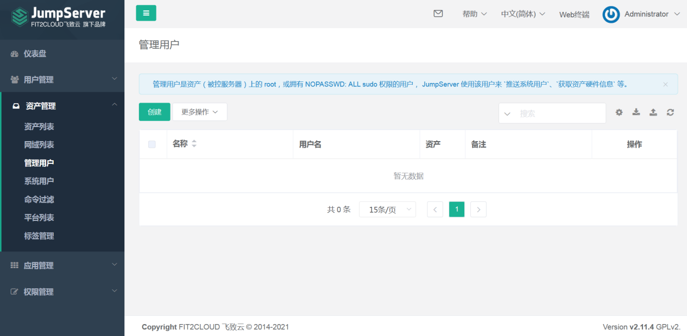
图4-5 管理用户
创建远程连接用户，用户名为root密码为服务器密码，点击提交进行创建，如图4-6所示：
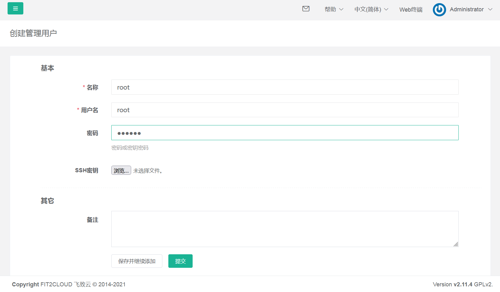
图4-6 创建管理用户
选择“系统用户”，点击右侧“创建”按钮，创建系统用户，选择主机协议“SSH”，设置密码为服务器ssh密码，如图4-7所示：
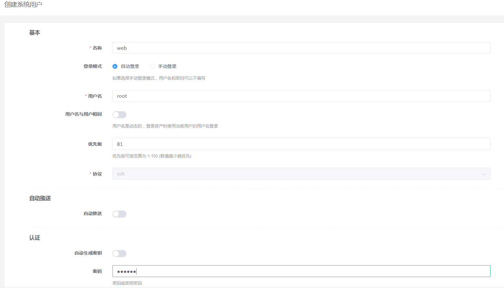
图4-7 创建系统用户
点击左侧导航栏，展开“资产管理”项目，选择“资产列表”，点击右侧“创建”按钮，如图4-8所示：
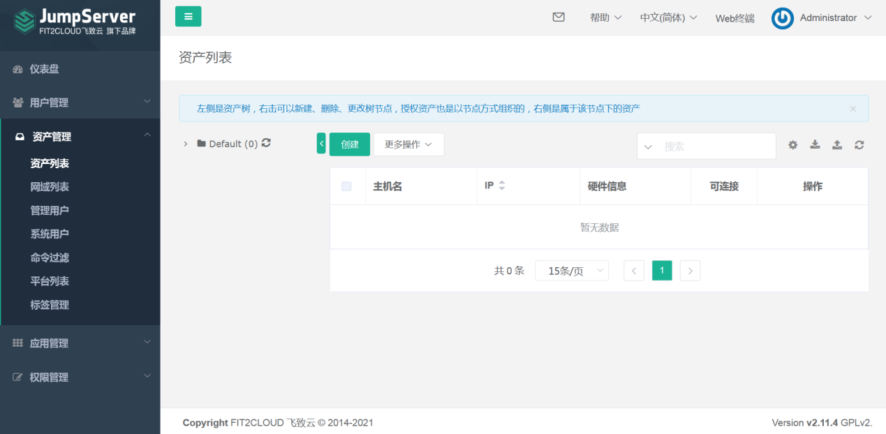
图4-8 管理资产
创建资产，将云平台主机（controller）加入资产内，如图4-9所示：
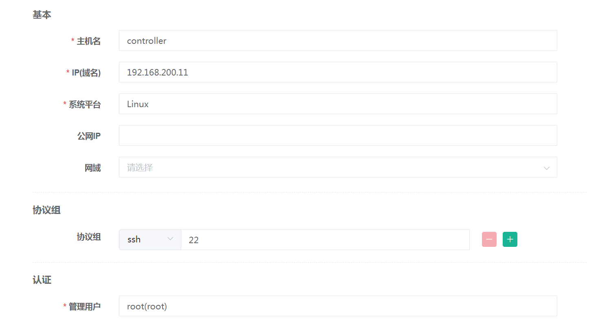
图4-9 创建资产controller
创建资产，将云平台主机（compute）加入资产内，如图4-10、图4-11所示：
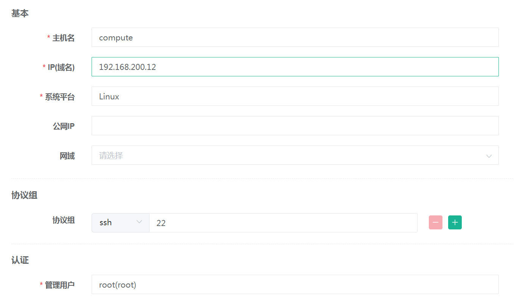
图4-10 创建资产compute
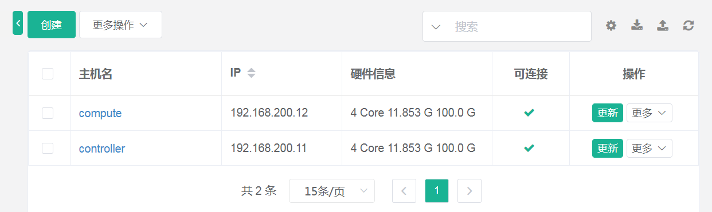
图4-11 创建成功
（7）资产授权
点击左侧导航栏，展开“权限管理”项目，选择“资产授权”，点击右侧“创建”按钮，创建资产授权规则，如图4-12所示：
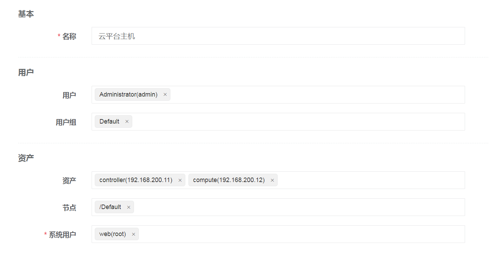
图4-12 创建资产授权规则
（8）测试连接
点击右上角管理员用户下拉箭头，选择“用户界面”，如图4-13所示：
图4-13 创建资产授权规则
如果未出现Default项目下两个资产主机，点击收藏夹后刷新按钮进行刷新，如图4-14所示：
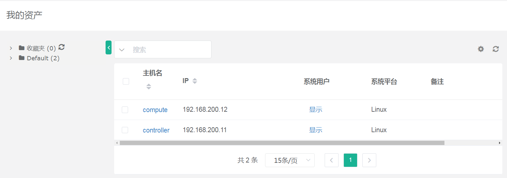
图4-14 查看资产
点击左侧导航栏，选择“Web终端”进入远程连接页面，如图4-15所示：
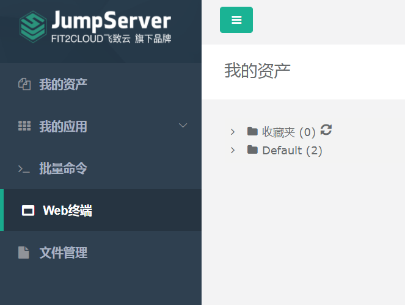
图4-15 进入远程连接终端
点击左侧Default，展开文件夹，点击controller主机，右侧成功连接主机，如图4-16所示：
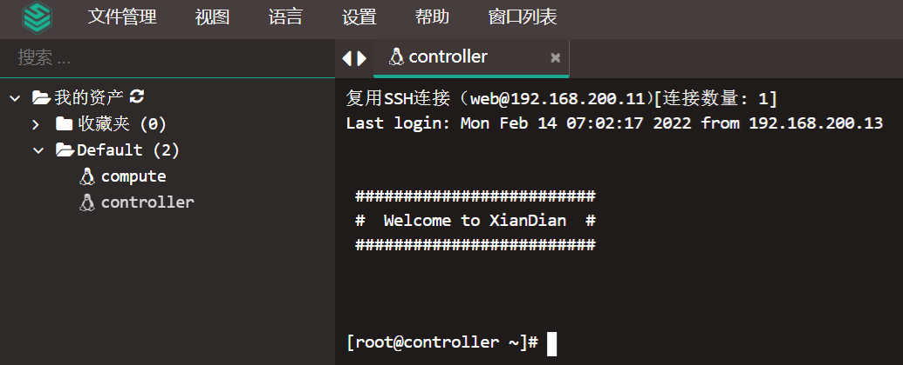
图4-16 测试连接
至此OpenStack对接堡垒机案例实操成功。